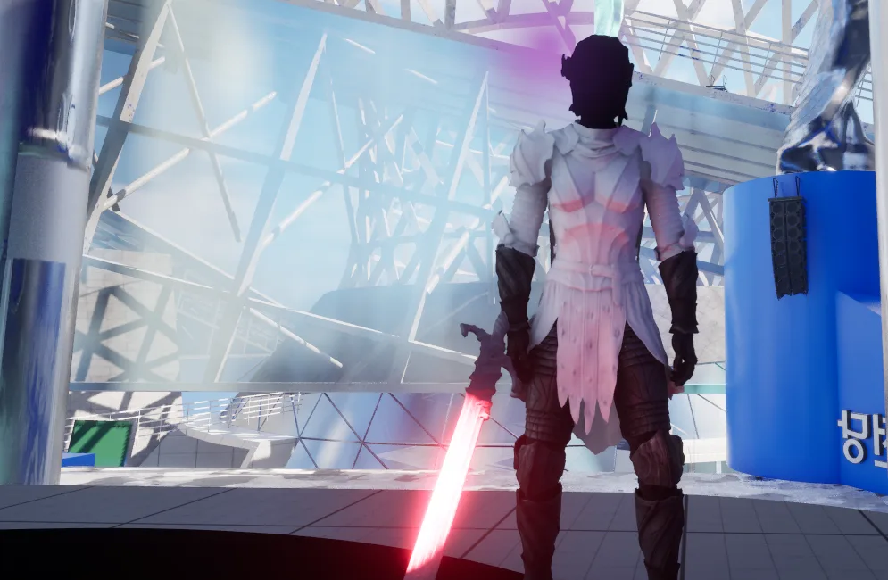
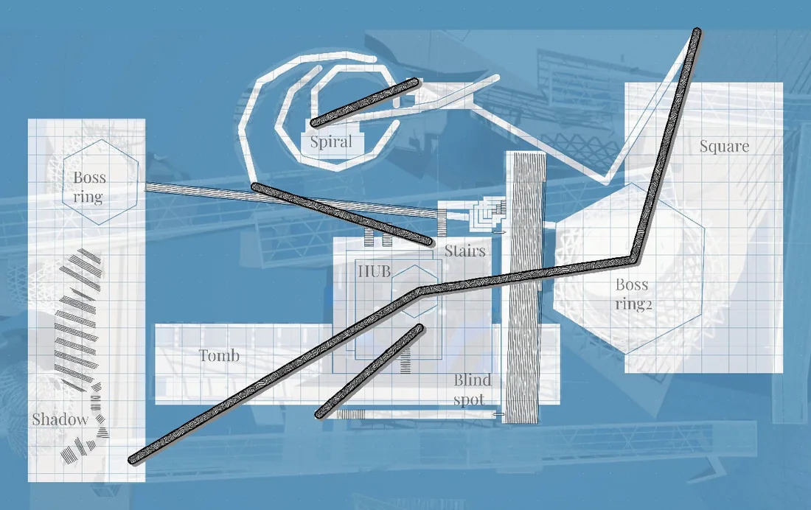

01Context
Two tools, one space
TouchDesigner is a tool for real-time visuals. Unreal Engine is a game engine. I wanted to know how well the two can work together, and whether visuals generated in TouchDesigner can do real level design work: show the player where to go.
The result is a point and click puzzle adventure concept. The level is a group of white platforms, glass bridges, stairs and a lattice tower, connected by a long spiral ramp.
- Project
- Personal case study
- Engines and tools
- Unreal Engine 5, TouchDesigner
- Genre
- Point and click puzzle adventure, concept
- My role
- Concept, level design, materials
- Year
- 2026
02Main target
Real-time visuals as a guide
The main target was to connect two fields: a game engine and visuals that render in real time. The practical goal was smaller and clearer:
- Guide the player with visuals. Materials and textures made in TouchDesigner must lead the eye along the route.
- Keep the space readable. A white level can easily become flat. Light, glass and generated patterns must separate the path from the background.
03Decisions
What I built and how
Existing assets for the geometry. I built the level from existing assets. This kept my time for layout, flow and the material pipeline, not for modelling.
TouchDesigner for materials and textures. I made the materials and textures in TouchDesigner and imported them into Unreal Engine. Generated patterns on glass and floors mark the important surfaces.
A layout map first. I planned the route as a map with named areas before I placed any asset. The map below shows the spiral, the bridges and the main squares.




04Open questions
What I learned
TouchDesigner is not a prototyping tool for games. For game prototyping, its functionality is not sufficient. It is strong as a source of materials, textures and moving patterns, but the playable space, collision and logic must stay in Unreal Engine.
Generated visuals can guide. A pattern that moves or glows on one surface pulls the eye as well as a light does. I now use the same idea when I light a blockout: one strong signal on the path, calm surfaces around it.